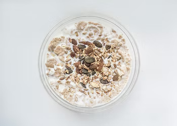

Simple and easy to breakfast, good when you're in a rush or for mealprep.
Grab your desired container, I personally use jars for convenience,
and put it on top of the kitchen scale, transfer 50g of oats and 10g of chia seeds
inside the container then ive them a rough mix in order evenly spread theam before puttin in
your wet ingredients.
Pour in 100ml of milk, I use partially skimmed milk (Tapporosso Il Latte Della Centrale) but you can use full fat or any plant alternative,
then add 100g of yoghurt, I use fat free Greek yoghurt (Total 0% Greek Yoghurt by Fage) but you can use any type of yoghurt you want, and a dash of salt.
Give it a mix untill they're evenly distributed and put the lid on top.
Refrigerate for a couple of hours, ideally overnight, before eating.
You can either heat them up in the microwave or eat them cold.
Add you favorite toping before eating in oder to keep them fresh and crisp.
Some of my favourites are fresh fruits, dark chocolate and walnuts.
Enjoy!